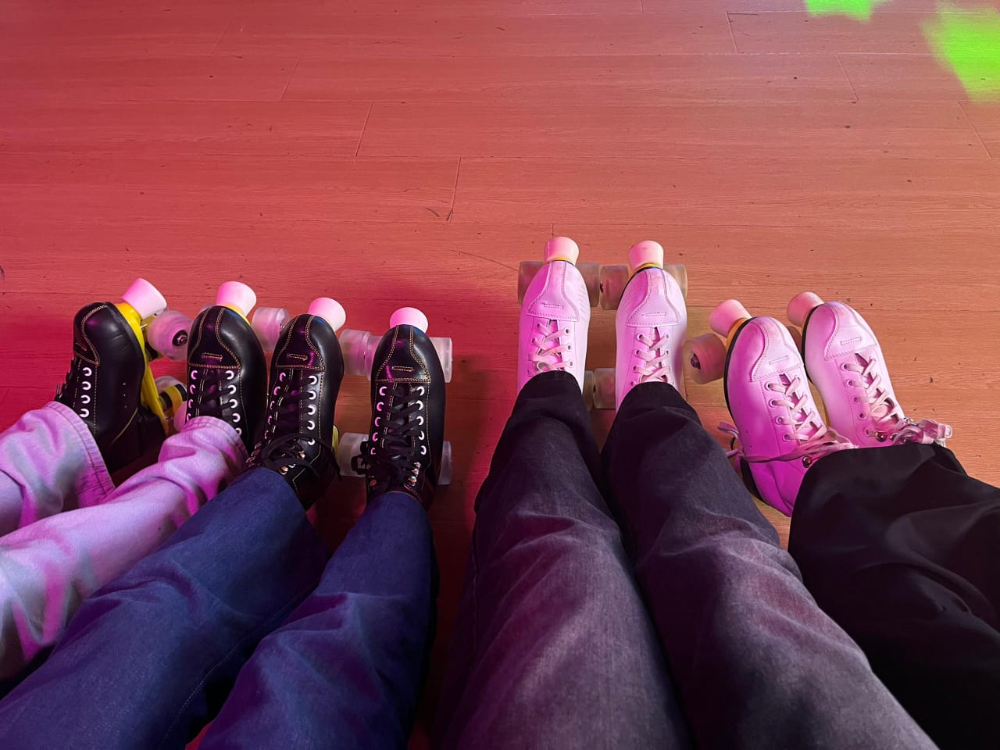
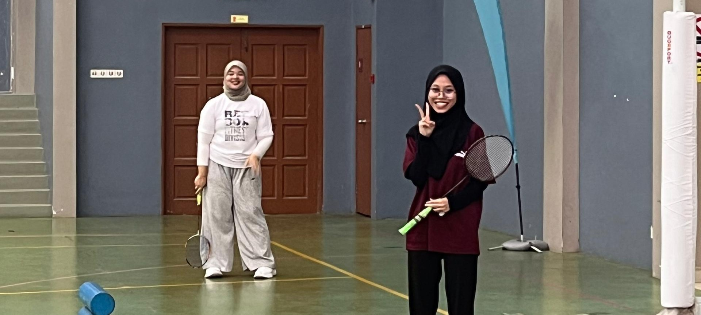
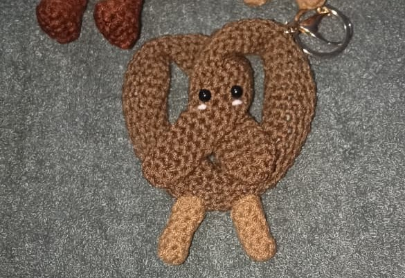
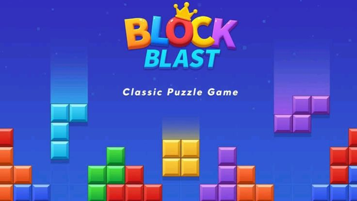

Home
Home
 About Me
About Me
 Education
Education
 Family
Family
 Friends
Friends
 Favorite Dessert
Favorite Dessert
 Hobbies
Hobbies
My Hobbies



During my free time, I enjoy doing activities that make me happy and relaxed. I have numerous hobbies that I love to do. Having hobbies helps me reduce stress and improve my creativity. These are some of my hobby pictures. The first one is my brisk walk picture. I love to do this activity with my friends. It was taken at UiTM Kedah by my friend while we were doing this activity together. The second picture shows me rollerblading, an activity I do with my friends at 1 Avenue Mall, during mid sem break. The third picture is a holiday trip with my friends. This is my hobby if I have a long semester break. The fourth is playing badminton. Usually, I will do this activity at the Unit Sukan University with my friends. Lastly, crocheting. This is one of my hidden talents. Only my close friends and family know that I have that skill.
Virtual Hobby

Actually, playing online games is a rare thing that I do, yet I still enjoy playing online games. These two are the games that I would love to play. Mobile Legends, or ML, is a must-play game I turn to when I'm having an extreme difficulty and stressful time. This is the game that could minimise the stress I face, especially during the study and assignment week. Meanwhile, Block Blast is the game that I play when I lose interest in doing anything in this world, including scrolling TikTok, eating, and sleeping. This game frees up my mind and makes me feel like I don't have to think about anything.
Things I Love To Do
- Browsing social media
- Brisk walk
- Playing rollerblade
- Playing badminton
- Go for holiday trips
- Listening music
- Playing ukulele
- Crocheting
- Sewing